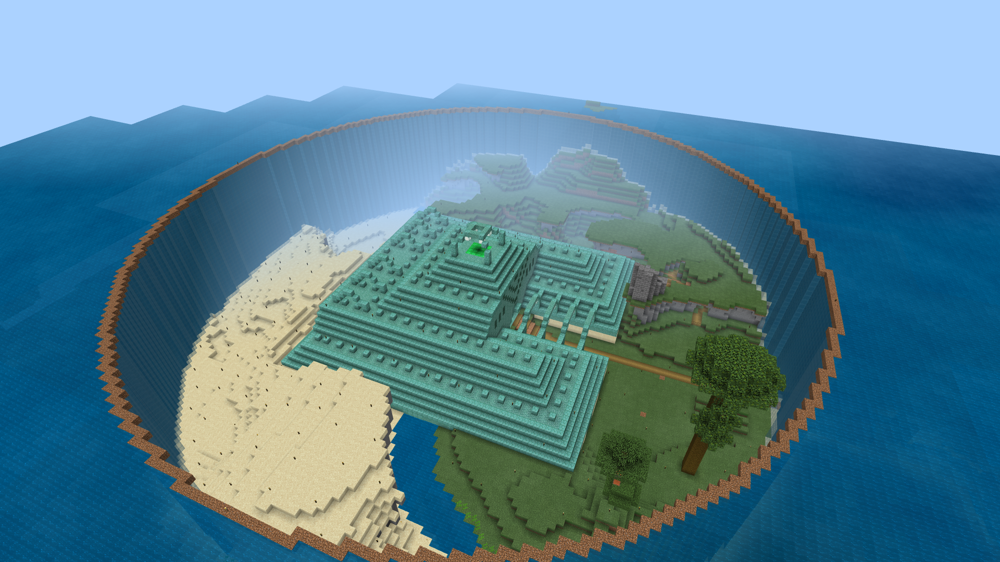

Build projects
This page will list the most important buidling projects I have done while playing minecraft. Below as well as on the left, links to the projects can be found.
Cathedral
The cathedral was one of the first larger projects I did on the realm. To make it I looked at a previous build I made and scaled it to be the right size for the area. To make sure that the cathedral would turn out nice I build it entirely in creative before building it on the realm. This allowed me to test and try out lots of different details without it being a pain to create and remove. The undercroft of the cathedral is quite dark and sometimes a zombie is even heard. So watch out for the walking dead if you dare to enter the undercroft.
The cathedral is located in the spawn area at (). For more information and to learn about the secrets lurking deep beneath the cathedral, visit the corresponding page.
City of Eternity
The City of Eternity is maybe my most ambitious project ever. Never before have I taken on such a big project which requires tons upon tons of work and tens of thousands of blocks for just the outer wall alone!! For this project I build my own interpretation of the Imperial City from The Elder Scrolls 4: Oblivion. Before I started buidling in survival I had a lot of preperation work. First I created the sizes of all the circles and made sure that they look good in relation to the rest of the build, and make sure that the buildings have the right size. Then create a sketch of it in creative to see if it looks okay, if not go back and try new sizes for the circles. Only after that I could start working on it. In total I have been working on it for more then 1 year now and I'm still not nearly finished.
The City of Eternity is located at (). For more information about the process and the actual results, visit the corresponding page.
Sancturary
The Sancturary was a project I started after I saw a video by a YouTuber who drained an ocean monument. I got inspired to do the same however with a twist. Instead of draining it and just transforming the sand in grass, I chose to only transform half of the sand in grass. And the area that I did transform I also terraformed to make it look a lot better than it naturally could. This was my first project involving terraforming, and man it is so much harder then it looks. The draining took quite long however the terraforming was much more intense and really challenged me. However in the end it did turn out to look quite nice and when I posted in on reddit it even reached the front page!
The Sancturary is located at (). For more information and to see the reddit post that got famous, visit the corresponding page.